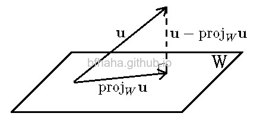
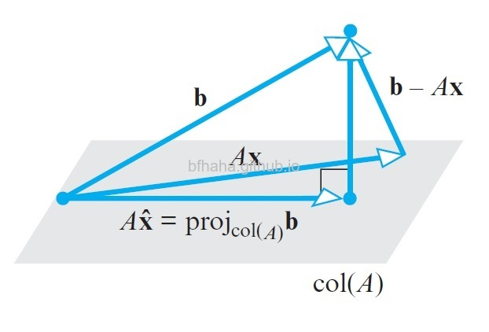

Diamond
Orthogonal Basis
Anton, Theorem 6.3.2. If \(S=\{\mathbf{v}_1, \mathbf{v}_2, ..., \mathbf{v}_n\}\) is an orthogonal basis for an inner product space \(V\), and if \(\mathbf{u}\) is any vector in \(V\), then
\[\mathbf{u}=\frac{\langle \mathbf{u}, \mathbf{v}_1\rangle}{||\mathbf{v}_1||^2}\mathbf{v}_1+\frac{\langle \mathbf{u}, \mathbf{v}_2\rangle}{||\mathbf{v}_2||^2}\mathbf{v}_2+\cdots +\frac{\langle \mathbf{u}, \mathbf{v}_n\rangle}{||\mathbf{v}_n||^2}\mathbf{v}_n.\]
Proof: Suppose that \(\mathbf{u}=a_1\mathbf{v}_1+a_2\mathbf{v}_2+\cdots +a_n\mathbf{v}_n\). Then \(\langle \mathbf{u}, \mathbf{v_i}\rangle=a_i\langle \mathbf{v}_i, \mathbf{v}_i\rangle=a_i ||\mathbf{v}_i||^2\) and \(a_i=\frac{\langle \mathbf{u}, \mathbf{v}_i\rangle}{||\mathbf{v}_i||^2}\)
Orthogonal Projection
Anton, Theorem 6.3.4. Let \(W\) be a finite-dimensional subspace of an inner product space \(V\). If \(\{\mathbf{w}_1, \mathbf{w}_2, ..., \mathbf{w}_r\}\) is an orthogonal basis for \(W\), and \(\mathbf{u}\) is any vector in \(V\), then
\[\text{proj}_{W}\mathbf{u}=\frac{\langle \mathbf{u}, \mathbf{w}_1\rangle}{||\mathbf{w}_1||^2}\mathbf{w}_1+\frac{\langle \mathbf{u}, \mathbf{w}_2\rangle}{||\mathbf{w}_2||^2}\mathbf{w}_2+\cdots +\frac{\langle \mathbf{u}, \mathbf{w}_r\rangle}{||\mathbf{w}_r||^2}\mathbf{w}_r.\]
Proof:
\[
\begin{array}{rcl}
& & \frac{\langle \mathbf{u}, \mathbf{w}_1\rangle}{||\mathbf{w}_1||^2}\mathbf{w}_1+\frac{\langle \mathbf{u}, \mathbf{w}_2\rangle}{||\mathbf{w}_2||^2}\mathbf{w}_2+\cdots +\frac{\langle \mathbf{u}, \mathbf{w}_r\rangle}{||\mathbf{w}_r||^2}\mathbf{w}_r \\
& = & \frac{\langle \text{proj}_{W}\mathbf{u}+(\mathbf{u}-\text{proj}_{W}\mathbf{u}), \mathbf{w}_1\rangle}{||\mathbf{w}_1||^2}\mathbf{w}_1+\frac{\langle \text{proj}_{W}\mathbf{u}+(\mathbf{u}-\text{proj}_{W}\mathbf{u}), \mathbf{w}_2\rangle}{||\mathbf{w}_2||^2}\mathbf{w}_2+\cdots +\frac{\langle \text{proj}_{W}\mathbf{u}+(\mathbf{u}-\text{proj}_{W}\mathbf{u}), \mathbf{w}_r\rangle}{||\mathbf{w}_r||^2}\mathbf{w}_r \\
& \stackrel{\langle \mathbf{u}-\text{proj}_{W}\mathbf{u}, \mathbf{w}_i\rangle=0}{=} & \frac{\langle \text{proj}_{W}\mathbf{u}, \mathbf{w}_1\rangle}{||\mathbf{w}_1||^2}\mathbf{w}_1+\frac{\langle \text{proj}_{W}\mathbf{u}, \mathbf{w}_2\rangle}{||\mathbf{w}_2||^2}\mathbf{w}_2+\cdots +\frac{\langle \text{proj}_{W}\mathbf{u}, \mathbf{w}_r\rangle}{||\mathbf{w}_r||^2}\mathbf{w}_r \\
& \stackrel{\text{Theorem 6.3.2}}{=} & \text{proj}_{W}\mathbf{u}.
\end{array}
\]

注意到Theorem 6.3.2的 \(\mathbf{u}\) 是在 \(V\) 中，Theorem 6.3.4的 \(\mathbf{u}\) 並不在 \(W\) 中，但兩者的公式幾乎是一樣的。
Householder Reflections
See Anton Contemporary, sec.7.10.
Gram-Schmidt Process
Anton, p.371. To convert a basis \(\{\mathbf{u}_1, \mathbf{u}_2, ..., \mathbf{u}_r\}\) into an orthogonal basis \(\{\mathbf{v}_1, \mathbf{v}_2, ..., \mathbf{v}_r\}\), perform the following computations:
\[\mathbf{v}_i=\mathbf{u}_i-\frac{\langle \mathbf{u}_i, \mathbf{v}_1\rangle}{||\mathbf{v}_1||^2}\mathbf{v}_1-\frac{\langle \mathbf{u}_i, \mathbf{v}_2\rangle}{||\mathbf{v}_2||^2}\mathbf{v}_2-\cdots -\frac{\langle \mathbf{u}_i, \mathbf{v}_{i-1}\rangle}{||\mathbf{v}_{i-1}||^2}\mathbf{v}_{i-1}\]
Proof: \(\mathbf{v}_i=\mathbf{u}_i-\text{proj}_{\text{span}(\{\mathbf{v}_1, \mathbf{v}_2, ..., \mathbf{v}_{i-1}\})}\mathbf{u}_i\). Then by Theorem 6.3.4.
\(QR\)-Decomposition
Anton, thm.6.3.7. If \(A\) is an \(m\times n\) matrix with linearly independent column vectors, then \(A\) can be factored as \[A=QR,\] where \(Q\) is an \(m\times n\) matrix with orthonormal column vectors, and \(R\) is an \(n\times n\) invertible upper triangular matrix.
Proof:
- Suppose that the column vectors of \(A\) are \(\mathbf{u}_1, \mathbf{u}_2, ..., \mathbf{u}_n\). Apply the Gram-Schmidt process to transform \(\mathbf{u}_1, \mathbf{u}_2, ..., \mathbf{u}_n\) into an orthonormal set \(\mathbf{q}_1, \mathbf{q}_2, ..., \mathbf{q}_n\). Then denote
\[A=\begin{pmatrix}\mathbf{u}_1 | \mathbf{u}_2 |\cdots |\mathbf{u}_n\end{pmatrix}\text{ and }Q=\begin{pmatrix}\mathbf{q}_1 | \mathbf{q}_2 |\cdots |\mathbf{q}_n\end{pmatrix}\]
-
Express \(\mathbf{u}_1, \mathbf{u}_2, ..., \mathbf{u}_n\) by \(\mathbf{q}_1, \mathbf{q}_2, ..., \mathbf{q}_n\) by Theorem 6.3.2,
\[
\begin{array}{ccc}
\mathbf{u}_1 &=& \langle \mathbf{u}_1, \mathbf{q}_1\rangle\mathbf{q}_1 + \langle \mathbf{u}_1, \mathbf{q}_2\rangle\mathbf{q}_2 + \cdots + \langle \mathbf{u}_1, \mathbf{q}_n\rangle\mathbf{q}_n \\
\mathbf{u}_2 &=& \langle \mathbf{u}_2, \mathbf{q}_1\rangle\mathbf{q}_1 + \langle \mathbf{u}_2, \mathbf{q}_2\rangle\mathbf{q}_2 + \cdots + \langle \mathbf{u}_2, \mathbf{q}_n\rangle\mathbf{q}_n \\
\vdots & \vdots & \vdots \\
\mathbf{u}_n &=& \langle \mathbf{u}_n, \mathbf{q}_1\rangle\mathbf{q}_1 + \langle \mathbf{u}_n, \mathbf{q}_2\rangle\mathbf{q}_2 + \cdots + \langle \mathbf{u}_n, \mathbf{q}_n\rangle\mathbf{q}_n
\end{array}
\]
Equivalently,
\[\begin{pmatrix}\mathbf{u}_1 | \mathbf{u}_2 |\cdots |\mathbf{u}_n\end{pmatrix}=\begin{pmatrix}\mathbf{q}_1 | \mathbf{q}_2 |\cdots |\mathbf{q}_n\end{pmatrix}\begin{pmatrix} \langle \mathbf{u}_1, \mathbf{q}_1\rangle & \langle \mathbf{u}_2, \mathbf{q}_1\rangle & \cdots & \langle \mathbf{u}_n, \mathbf{q}_1\rangle \\ \langle \mathbf{u}_1, \mathbf{q}_2\rangle & \langle \mathbf{u}_2, \mathbf{q}_2\rangle & \cdots & \langle \mathbf{u}_n, \mathbf{q}_2\rangle \\ \vdots & \vdots & \ddots & \vdots \\ \langle \mathbf{u}_1, \mathbf{q}_n\rangle & \langle \mathbf{u}_2, \mathbf{q}_n\rangle & \cdots & \langle \mathbf{u}_n, \mathbf{q}_n\rangle\end{pmatrix}.\]
Note that the \((i,j)\)-entry of the last matrix is \(\langle \mathbf{u}_j, \mathbf{q}_i\rangle\).
-
Since \(\mathbf{q}_1, \mathbf{q}_2, ..., \mathbf{q}_n\) were obtained by Gram-Schmidt process, we have
\[\mathbf{q}_i=\mathbf{u}_i-\frac{\langle \mathbf{u}_i, \mathbf{q}_1\rangle}{||\mathbf{q}_1||^2}\mathbf{q}_1-\frac{\langle \mathbf{u}_i, \mathbf{q}_2\rangle}{||\mathbf{q}_2||^2}\mathbf{q}_2-\cdots -\frac{\langle \mathbf{u}_i, \mathbf{q}_{i-1}\rangle}{||\mathbf{q}_{i-1}||^2}\mathbf{q}_{i-1}.\]
Equivalently,
\[\mathbf{u}_i=\frac{\langle \mathbf{u}_i, \mathbf{q}_1\rangle}{||\mathbf{q}_1||^2}\mathbf{q}_1+\frac{\langle \mathbf{u}_i, \mathbf{q}_2\rangle}{||\mathbf{q}_2||^2}\mathbf{q}_2+\cdots +\frac{\langle \mathbf{u}_i, \mathbf{q}_{i-1}\rangle}{||\mathbf{q}_{i-1}||^2}\mathbf{q}_{i-1}+\mathbf{q}_i\]
This follows that
\[
\langle \mathbf{u}_i, \mathbf{q}_j\rangle=0 \text{ if }i < j.
\]
Therefore,
\[A=\begin{pmatrix}\mathbf{u}_1 | \mathbf{u}_2 |\cdots |\mathbf{u}_n\end{pmatrix}=\begin{pmatrix}\mathbf{q}_1 | \mathbf{q}_2 |\cdots |\mathbf{q}_n\end{pmatrix}\begin{pmatrix} \langle \mathbf{u}_1, \mathbf{q}_1\rangle & \langle \mathbf{u}_2, \mathbf{q}_1\rangle & \cdots & \langle \mathbf{u}_n, \mathbf{q}_1\rangle \\ 0 & \langle \mathbf{u}_2, \mathbf{q}_2\rangle & \cdots & \langle \mathbf{u}_n, \mathbf{q}_2\rangle \\ \vdots & \vdots & \ddots & \vdots \\ 0 & 0 & \cdots & \langle \mathbf{u}_n, \mathbf{q}_n\rangle\end{pmatrix}\stackrel{\text{def.}}{=}QR.\]
-
Furthermore, if \(\langle \mathbf{u}_i, \mathbf{q}_i\rangle=0\) for some \(i\),
then \[\mathbf{u}_i=\langle \mathbf{u}_i, \mathbf{q}_1\rangle \mathbf{q}_1+\langle \mathbf{u}_i, \mathbf{q}_2\rangle \mathbf{q}_2+\cdots +\langle \mathbf{u}_i, \mathbf{q}_{i-1}\rangle \mathbf{q}_{i-1}\in \text{span}(\{\mathbf{q}_1, \mathbf{q}_2, ..., \mathbf{q}_{i-1}\})=\text{span}(\{\mathbf{u}_1, \mathbf{u}_2, ..., \mathbf{u}_{i-1}\}).\]
Which contraries to the independency of \(\{\mathbf{u}_1, \mathbf{u}_2, ..., \mathbf{u}_n\}\).
Therefore, \(\langle \mathbf{u}_i, \mathbf{q}_i\rangle\neq 0\) for all \(i\) and \(\det{R}=\langle \mathbf{u}_1, \mathbf{q}_1\rangle\langle \mathbf{u}_2, \mathbf{q}_2\rangle\cdots \langle \mathbf{u}_n, \mathbf{q}_n\rangle\neq 0\) and \(R\) is invertible.
Least Squares Problem
\[
\begin{array}{ll}
& \text{Minimize } \sqrt{[y_1-(ax_1+b)]^2+\cdots +[y_n-(ax_n+b)]^2} \\
\Leftrightarrow & \text{Minimize } ||\begin{bmatrix}y_1-(ax_1+b)\\\vdots\\y_n-(ax_n+b)\end{bmatrix}|| \\
\Leftrightarrow & \text{Minimize } ||\begin{bmatrix}y_1\\\vdots\\y_n\end{bmatrix}_{\mathbf{b}}-\begin{bmatrix}x_1&1\\\vdots&\vdots\\x_n&1\end{bmatrix}_{A}\begin{bmatrix}a\\b\end{bmatrix}_{\mathbf{x}}|| \\
\Leftrightarrow & \text{Minimize } ||\mathbf{b}-A\mathbf{x}|| \\
\end{array}
\]
注意到是 \(\text{Minimize } \sqrt{[y_1-(a_1 x+b)]^2+\cdots +[y_n-(ax_n+b)]^2}\)，不是 \(\text{Minimize }|y_1-(a_1 x+b)|+\cdots +|y_n-(ax_n+b)|\) ，而且兩者並不等價，例如 \(3+4\leq 1+5\not\Leftarrow 3^2+4^2\leq 1^2+5^2\)。
Anton, p.379. Given a linear system \(A\mathbf{x}=\mathbf{b}\) of \(m\) equations in \(n\) unknowns, find a vector \(\mathbf{x}\) in \(\mathbb{R}^n\) that minimizes \(||\mathbf{b}-A\mathbf{x}||\) with respect to the Euclidean inner product on \(\mathbb{R}^m\). We call such a vector, if it exists, a least squares solution of \(A\mathbf{x}=\mathbf{b}\), we call \(\mathbf{b}-A\mathbf{x}\) the least squares error vector, and we call \(||\mathbf{b}-A\mathbf{x}||\) the least squares error.
There are three methods to find \(\mathbf{x}\).
- Anton, p.380. \(\mathbf{x}\) is the solution of \(A\mathbf{x}=\text{proj}_{\text{CS}(A)}\mathbf{b}\).

但這個方法不太實用，因為 \(\text{proj}_{\text{CS}(A)}\mathbf{b}\) 並不容易求，要求的話得先用Gram-Schmidt求出 \(\text{CS}(A)\) 的一組orthonormal basis。
- Anton, p.380. \(\mathbf{x}\) is the solution of \(A^t A \mathbf{x}=A^t \mathbf{b}\).
Proof:
\[
\begin{array}{cl}
& A\mathbf{x}=\text{proj}_{\text{CS}(A)}\mathbf{b} \\
\Rightarrow & \mathbf{b}-A\mathbf{x}=\mathbf{b}-\text{proj}_{\text{CS}(A)}\mathbf{b} \\
\Rightarrow & A^t(\mathbf{b}-A\mathbf{x})=A^t(\mathbf{b}-\text{proj}_{\text{CS}(A)}\mathbf{b}) \\
\stackrel{(\mathbf{b}-\text{proj}_{\text{CS}(A)}\mathbf{b})\in \text{CS}(A)^{\perp}}{\Rightarrow} & A^t(\mathbf{b}-A\mathbf{x})=\mathbf{0} \\
\Rightarrow & A^t A \mathbf{x}=A^t \mathbf{b}
\end{array}
\]
我個人使用的記憶法是一稅在逼，a tax at b。
如果 \(A\) 的column是linearly independent，則 \(A^t A\) 是invertible，於是可以得到 \(\mathbf{x}=(A^t A)^{-1} A^t \mathbf{b}\)。
Proof: We show that \(\text{N}(A^t A)=0\). Then by Dimension Theorem, \(\text{rank}(A^t A)=n\) and \(A^t A\) is invertible.
\[
\begin{array}{cl}
\text{If} & (A^t A)\mathbf{x}=A^t(A\mathbf{x})=\mathbf{0} \\
\Rightarrow & A\mathbf{x}\in N(A^t)\cap \text{CS}(A) \\
\stackrel{\text{N}(A^t)\perp \text{CS}(A)}{\Rightarrow} & A\mathbf{x}=\mathbf{0} \\
\stackrel{\text{the columns of }A\text{ are linearly independent}}{\Rightarrow} & \mathbf{x}=\mathbf{0}
\end{array}
\]
- Anton, thm.6.4.6. Let \(A=QR\) be a \(QR\)-decomposition of \(A\). Then \(\mathbf{x}=R^{-1}Q^t\mathbf{b}\).
Proof: This follows immediately from \(\mathbf{x}=(A^t A)^{-1}A^t \mathbf{b}\) and \(A=QR\).
Singular Value Decomposition
Mnemonic:
\(\mathbf{v}_i\) are orthonormal basis for \(F^n\) consisting of eigenvectors of \(A^* A\) and \(\lambda_i\) are eigenvalues for \(A^* A\) and \(\text{rank }A=r\).
\[
\begin{array}{ccccc}
\left(\frac{A\mathbf{v}_1}{||A\mathbf{v}_1||}|\frac{A\mathbf{v}_2}{||A\mathbf{v}_2||}|\cdots \right) & \begin{pmatrix}||A\mathbf{v}_1||=\sqrt{\lambda_1}\\ & ||A\mathbf{v}_2||=\sqrt{\lambda_2} \\ & & \ddots \\ &&& ||A\mathbf{v}_r||=\sqrt{\lambda_r} \\ &&&& 0 \\ &&&&& \ddots \\ &&&&&& 0 \end{pmatrix} & = & A & (\mathbf{v}_1|\mathbf{v}_2|\cdots |\mathbf{v}_n) \\
U_{m\times m} & \Sigma_{m\times n} & = & A_{m\times n} & V_{n\times n}
\end{array}
\]
- Anton, sec.9.4.
- Friedberg, thm.9.26
- Friedberg, thm.9.27
- Anton Contemporary, sec.8.6
Pseudoinverse
- Friedberg, p.413, def.
- Friedberg, thm.6.29: \(A=U\Sigma V^*, A^{\dagger}=V\Sigma^{\dagger}U^*\)
- Friedberg, thm.6.30(b): \(A\mathbf{x}=\mathbf{b}, \hat{\mathbf{x}}=A^{\dagger}\mathbf{b}\)